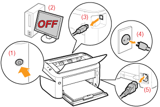

|
Se "Observera (Rengöring)" innan du rengör skrivarens utsida.
|
1
Stäng av skrivaren och koppla sedan loss kablarna från skrivaren.

<Så här kopplar du loss kablarna>
|
USB-kabel
|
(2) Stäng av skrivaren.
(3) Koppla loss kabeln från skrivaren.
|
|
Nätkabel
|
(4) Ta ut nätkabelns stickpropp ur vägguttaget.
(5) Koppla loss kabeln från skrivaren.
|
2
Stäng multiformatsfacket och utmatningsfacket.
3
Torka rent med en mjuk, väl urvriden, trasa fuktad med vatten eller en svag diskmedelslösning.

4
Torka skrivaren med en torr trasa efter att du har torkat bort all smuts.
5
Anslut borttagna kablar när skrivaren är helt torr.
<Så här ansluter du kablarna>
|
USB-kabel
|
Ansluts till USB-kontakt på skrivaren.
|
|
Nätkabel
|
(1) Sätt i nätkabeln i skrivarens strömuttag.
(2) Sätt i stickproppen i vägguttaget.
|